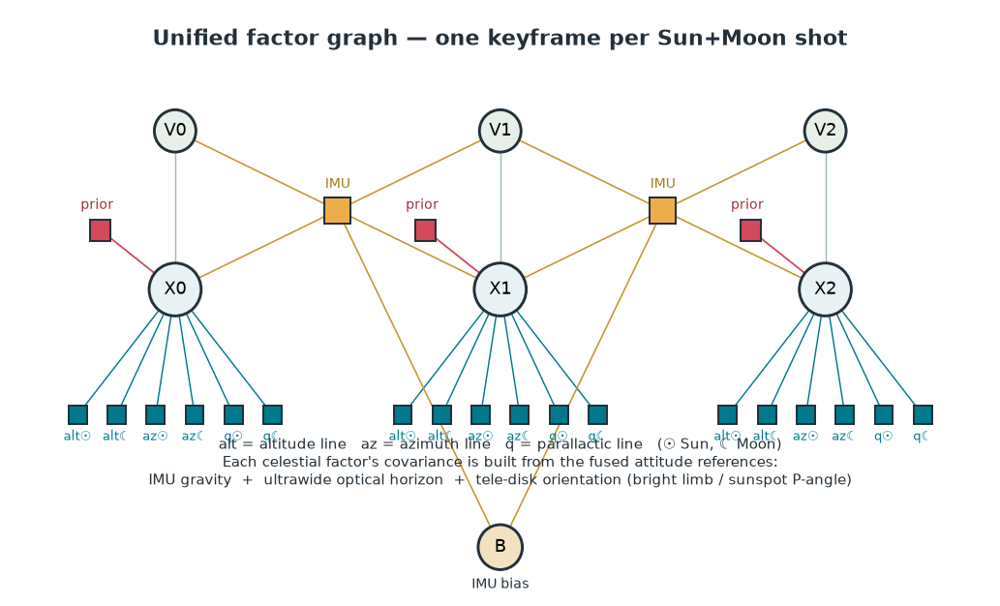
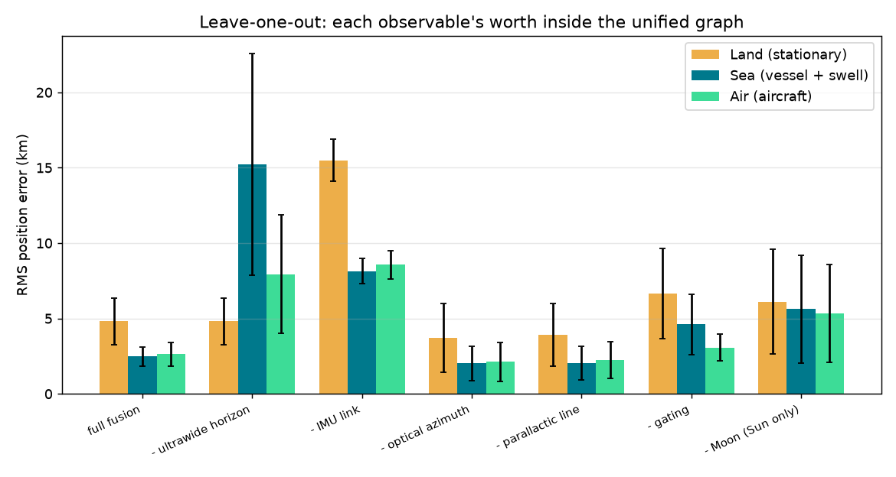
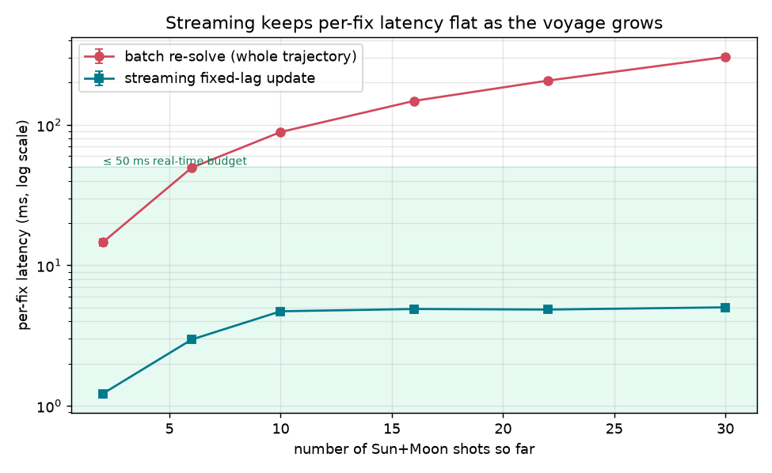
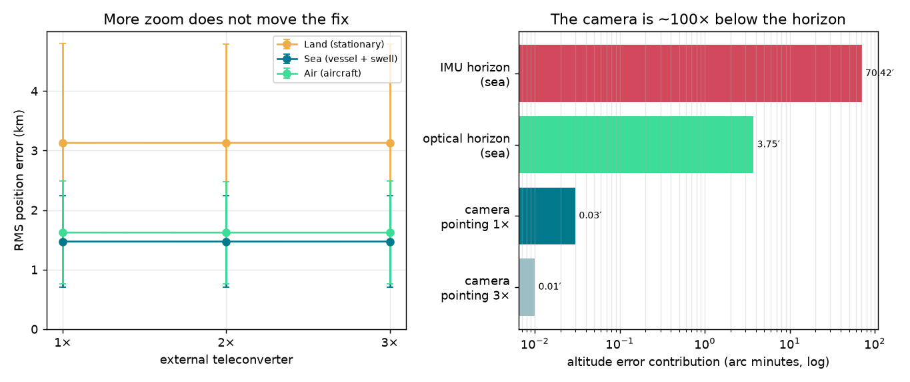
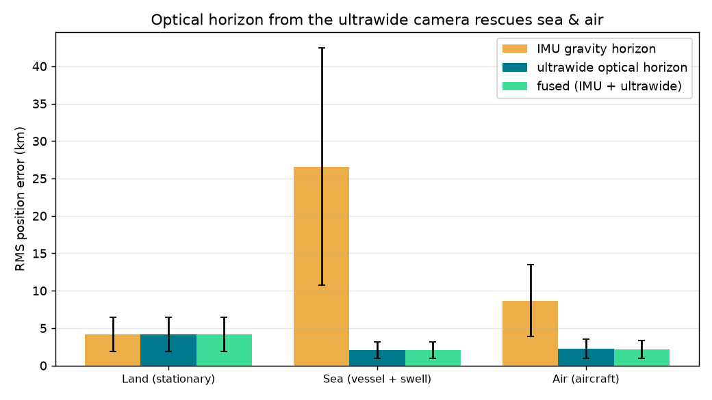
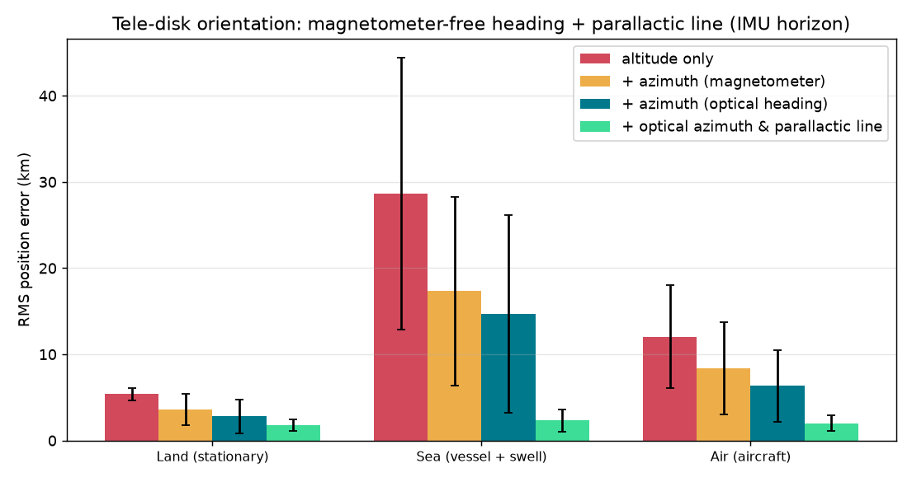

Daytime Sun + Moon Celestial Fix
Headline: fusing many gated shots with IMU cuts error 4–10×
8 seeds RMS horizontal position error (km), mean ± std.
| Regime | starfix single-fix | Factor graph, no IMU | Factor graph + IMU |
|---|---|---|---|
| Land (stationary) | 16.7 ± 1.5 | 16.7 ± 1.5 | 4.1 ± 2.1 |
| Sea (vessel + swell) | 241.0 ± 35.2 | 157.1 ± 102.4 | 25.4 ± 14.6 |
| Air (aircraft) | 75.5 ± 19.7 | 75.1 ± 19.3 | 7.7 ± 4.4 |
The unified factor graph — everything fused
One graph fuses every observable at once: per Sun+Moon shot a pose (position + attitude), a velocity and a shared IMU bias, tied across shots by IMU preintegration, with six celestial factors per shot (altitude, azimuth and parallactic line, for Sun and Moon). Each factor's covariance is built from the fused attitude references — IMU gravity, ultrawide optical horizon and tele-disk orientation.

| Regime | full fusion | − ultrawide | − IMU | − opt. az | − parallactic | − gating | − Moon |
|---|---|---|---|---|---|---|---|
| Land (stationary) | 4.8 ± 1.6 | 4.8 ± 1.6 | 15.5 ± 1.4 | 3.7 ± 2.3 | 3.9 ± 2.1 | 6.7 ± 3.0 | 6.1 ± 3.5 |
| Sea (vessel + swell) | 2.5 ± 0.6 | 15.2 ± 7.4 | 8.1 ± 0.8 | 2.0 ± 1.1 | 2.0 ± 1.1 | 4.6 ± 2.0 | 5.6 ± 3.6 |
| Air (aircraft) | 2.6 ± 0.8 | 7.9 ± 3.9 | 8.6 ± 0.9 | 2.1 ± 1.3 | 2.2 ± 1.2 | 3.1 ± 0.9 | 5.3 ± 3.2 |
Leave-one-out: the first column is the full fusion; each other column removes one observable, so a bigger number is a more valuable observable.

Real-time on iPhone 17 Pro
Batch re-solves the whole trajectory each fix, so latency grows with the voyage. The streaming fixed-lag smoother marginalises old keyframes and preintegrates the IMU once online, so each per-shot update is flat and bounded — with the same current-position accuracy. Fixes are low-rate; IMU dead-reckoning covers the gaps.
| Regime | batch @ 30 shots | streaming update | speedup | final-error (batch / stream) |
|---|---|---|---|---|
| Land (stationary) | 300 ms | 5.5 ms | 55× | 2.06 / 2.08 km |
| Sea (vessel + swell) | 305 ms | 5.2 ms | 58× | 1.07 / 1.09 km |
| Air (aircraft) | 296 ms | 5.3 ms | 55× | 1.20 / 1.21 km |

Ultrawide optical horizon — the sea & air fix
Firing the ultrawide lens with the tele gives an optical horizon, immune to the acceleration that corrupts the IMU gravity horizon. It brings the moving platforms to land-class accuracy; on land (no true sea horizon) it falls back to the IMU.
| Regime | IMU horizon | ultrawide horizon | fused |
|---|---|---|---|
| Land (stationary) | 4.2 ± 2.3 | 4.2 ± 2.3 | 4.2 ± 2.3 |
| Sea (vessel + swell) | 26.6 ± 15.8 | 2.0 ± 1.1 | 2.0 ± 1.1 |
| Air (aircraft) | 8.7 ± 4.8 | 2.3 ± 1.3 | 2.2 ± 1.2 |
The tele lens as an instrument, not a pointer
Resolving the disk — the Moon's bright limb, the Sun's sunspot P-angle — gives an absolute celestial orientation: a magnetometer-free heading (which makes the azimuth lines of position usable) and a horizon-free parallactic position line. Shown on the weak IMU horizon so the gain is visible; the Moon's limb is the workhorse (the Sun needs a filter and spots).
| Regime | heading σ (mag / optical) | alt only | +az (mag) | +az (optical) | +optical & parallactic |
|---|---|---|---|---|---|
| Land (stationary) | 1.0° / 0.4° | 5.4 ± 0.8 | 3.6 ± 1.9 | 3.5 ± 1.8 | 3.2 ± 1.3 |
| Sea (vessel + swell) | 1.0° / 0.4° | 28.6 ± 15.8 | 17.4 ± 11.0 | 14.9 ± 6.4 | 12.4 ± 6.2 |
| Air (aircraft) | 1.0° / 0.4° | 12.0 ± 6.0 | 8.4 ± 5.4 | 8.1 ± 5.5 | 5.2 ± 2.4 |
These numbers use the weak IMU horizon on purpose, to isolate the optical-disk contribution — not a regression versus the ~2 km ultrawide horizon. Stacking everything (ultrawide horizon + optical disk, Moon + Sun) gives the deployed accuracy:
| Regime | ultrawide horizon only | full stack (horizon + optical) |
|---|---|---|
| Land (stationary) | 5.2 ± 2.2 | 4.1 ± 2.1 |
| Sea (vessel + swell) | 2.7 ± 1.2 | 2.5 ± 1.1 |
| Air (aircraft) | 2.8 ± 1.2 | 2.6 ± 1.0 |
Would a 3× external teleconverter help? No.
A clip-on optic triples the tele focal length, but the fix is unchanged — the system is limited by the horizon/attitude reference, not the camera (already ~100× sharper). More zoom only shrinks an already-negligible term; heading is floored by astronomical residuals (libration, seeing, P-angle) that zoom can't fix. The lever that helps is a better horizon — a gimbal, longer ultrawide baseline, or better AHRS.

Least-rotation capture trigger
Firing the shutter at the calmest instants lowers the synthetic-horizon tilt error 3–6×. That converts to ≈2× lower fix error on land and in the air; at sea even the calmest swell instant is too tilted, so the swell floor dominates and a gimbal/mount is needed.
| Regime | gated σ | ungated σ | gated fix | ungated fix |
|---|---|---|---|---|
| Land (stationary) | 6.4′ | 18.1′ | 5.7 ± 2.4 | 7.7 ± 4.8 |
| Sea (vessel + swell) | 95.9′ | 402.6′ | 26.2 ± 14.5 | 23.1 ± 12.5 |
| Air (aircraft) | 22.2′ | 138.3′ | 8.6 ± 3.1 | 16.4 ± 9.6 |
Figures





How it works
The phone is a digital theodolite: its IMU gives the local vertical (a gravity-derived artificial horizon, no sea-horizon dip) and the camera gives the direction to the Sun and Moon. Each shot yields two altitude lines of position; GTSAM fuses them across shots, linked by IMU preintegration, into one trajectory with a covariance. A single hand-held phone sight is weak (~6–70′ of horizon tilt); the win comes from fusing many calm shots.